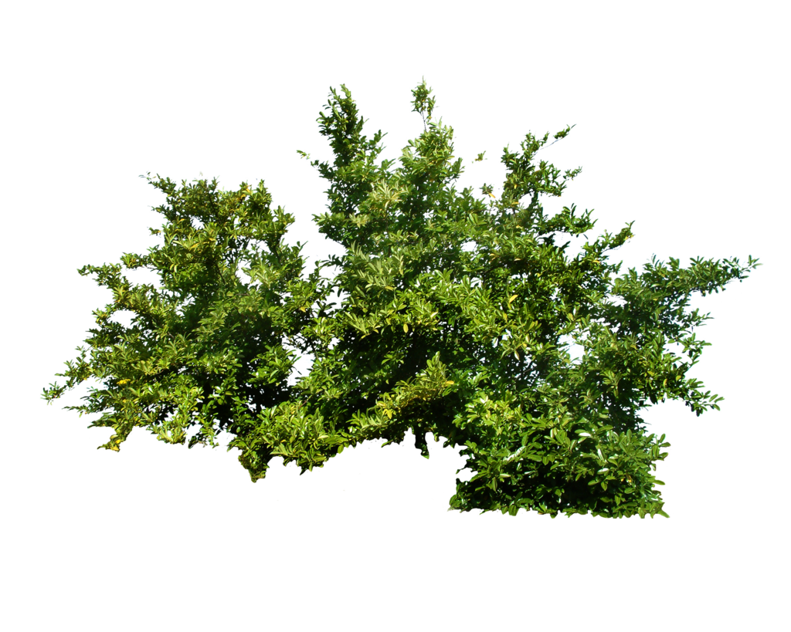
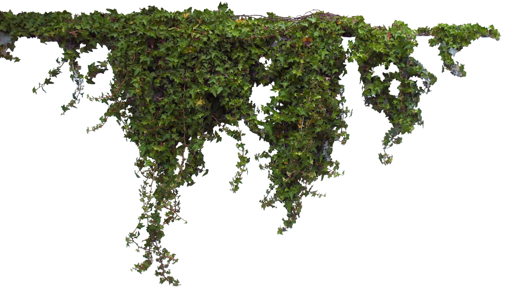
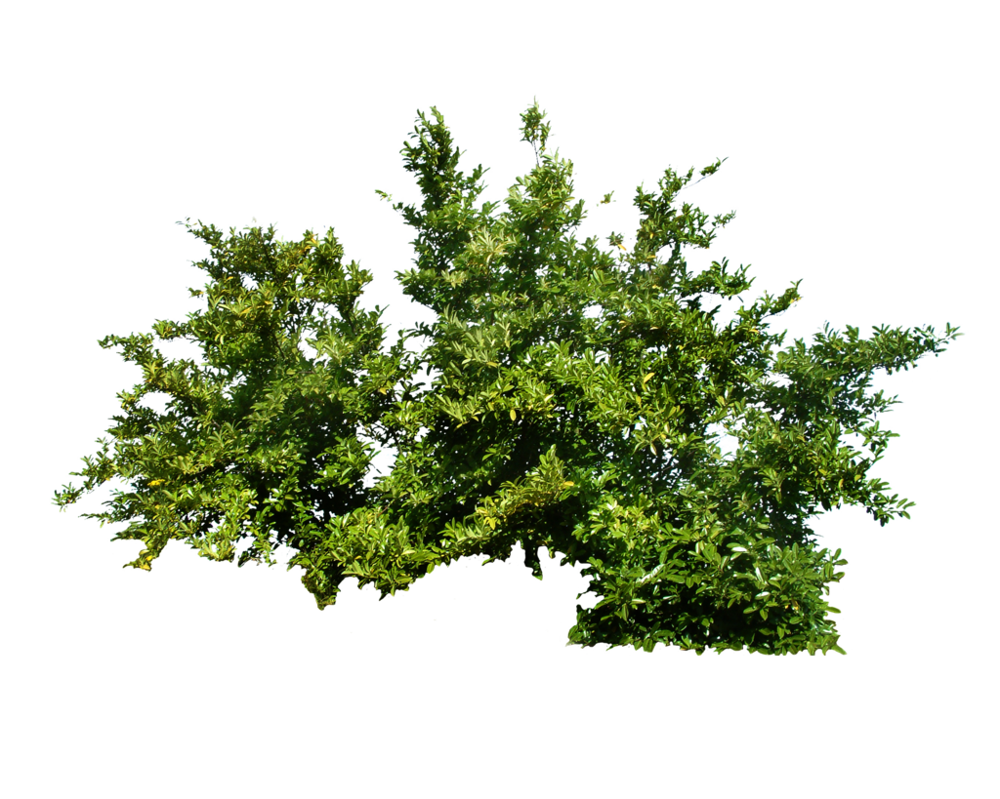
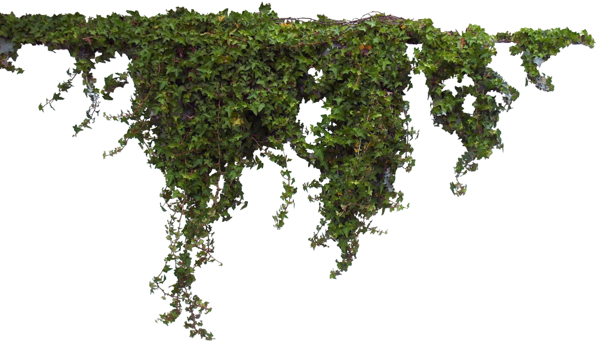
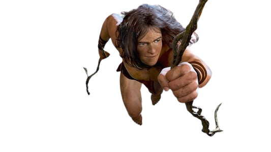
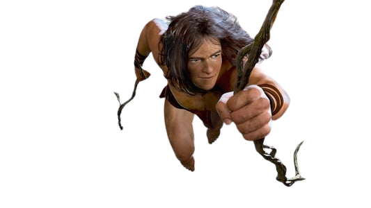

 

The Lagend of
TARZAN
Tarzan (Lord Greystoke by birth) is orphaned in West Africa in his infancy and reared by apes in the jungle; he is noted for his agility and powerful physique (typified by the image of his swinging himself through the trees, or at the end of a liana stem), and for his yodelling call.